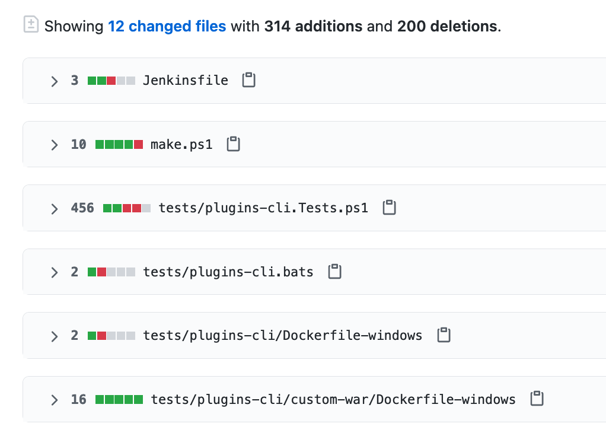
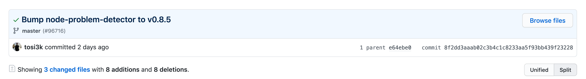

mkdir -p /workspace/projet-vcs-1/
cd /workspace/projet-vcs-1/Introduction au CI/CD
ENSG - Décembre 2023
Présentation disponible à l’adresse: https://cicd-lectures.github.io/slides/2023
Version PDF de la présentation : Cliquez ici
This work is licensed under a Creative Commons Attribution 4.0 International License
Code source de la présentation: https://github.com/cicd-lectures/slides

Comment utiliser cette présentation ?
Bonjour !
Damien DUPORTAL
Julien LEVESY
Et vous ?
A propos du cours
Une petite histoire du génie logiciel
Comment mener un projet logiciel?
Avant : le cycle en V

Que peut-il mal se passer?
Comment éviter ça?
La clé : gérer le changement!
Heureusement, vous avez des outils à disposition!
Préparer votre environnement de travail
Outils N√©cessaires üõ†
GitPod
D√©marrer avec GitPod üöÄ
Autorisations demand√©es par GitPod üîì
Lors de votre premi√®re connexion, GitPod va vous demander l’acc√®s (√† accepter) √† votre email public configur√© dans GitHub :

‚ö†Ô∏è Passez √† la slide suivante avant d’aller plus loin
Validation du Compte GitPod üì±
GitPod vous demande votre num√©ro de t√©l√©phone mobile afin d’√©viter les abus (service gratuit). Saisissez un num√©ro de t√©l√©phone valide pour recevoir par SMS un code de d√©blocage :

‚ö†Ô∏è Passez √† la slide suivante avant d’aller plus loin
Choix de l’√âditeur de Code ‚úé
Choisissez l’√©diteur "VSCode Browser" (la premi√®re tuile) :

‚ö†Ô∏è Passez √† la slide suivante avant d’aller plus loin
Workspaces GitPod üóÇ
Vous arrivez sur la page listant les "workspaces" GitPod :
Un workspace est une instance d’un environnement de travail virtuel (C’est un ordinateur distant)
⚠ Faites attention à réutiliser le même workspace tout au long de ce cours⚠

D√©marrer l’environnement GitPod
Cliquez sur le bouton ci-dessous pour démarrer un environnement GitPod personnalisé:

Apr√®s quelques secondes (minutes?), vous avez acc√®s √† l’environnement:
Gauche: navigateur de fichiers ("Workspace")
Haut: éditeur de texte ("Get Started")
Bas: Terminal interactif
À droite en bas: plein de popups à ignorer (ou pas?)
Source disponible dans: https://github.com/cicd-lectures/gitpod
Checkpoint üéØ
Les fondamentaux de git
Tracer le changement dans le code
Pourquoi un VCS ?
Concepts des VCS
Quel VCS utiliser ?
Git
Git is a free and open source distributed version control system designed to handle everything from small to very large projects with speed and efficiency.
Les 3 états avec Git
L’historique ("Version Database") : dossier
.gitDossier de votre projet ("Working Directory") - Commande
La zone d’index ("Staging Area")

Source : https://git-scm.com/book/fr/v2/D%C3%A9marrage-rapide-Rudiments-de-Git#les_trois%C3%A9tats
Exercice avec Git - 1.1
Solution de l’exercice avec Git - 1.1
Exercice avec Git - 1.2
Solution de l’exercice avec Git - 1.2
Terminologie de Git - Diff et changeset
diff: un ensemble de lignes "changées" sur un fichier donné

changeset: un ensemble de "diff" (donc peut couvrir plusieurs fichiers)

Terminologie de Git - Commit
commit: un changeset qui possède un (commit) parent, associé à un message

"HEAD": C’est le dernier commit dans l’historique


Exercice avec Git - 2
Solution de l’exercice avec Git - 2
Terminologie de Git - Branche
Abstraction d’une version "isol√©e" du code
Concrètement, une branche est un alias pointant vers un "commit"

Exercice avec Git - 3
Solution de l’exercice avec Git - 3
Terminologie de Git - Merge
On intègre une branche dans une autre en effectuant un merge
Un nouveau commit est créé, fruit de la combinaison de 2 autres commits

Exercice avec Git - 4
Solution de l’exercice avec Git - 4
Feature Branch Flow
Exemple d’usages de VCS
Pour aller plus loin avec Git et les VCS…
Présentation de votre projet
Contexte Géopolitique (1/2)
Contexte Géopolitique (2/2)
Prise en Main du Projet (1/2)
Prise en Main du Projet (2/2)
Comment accéder à un serveur démarré dans un Gitpod ?
Qu’est-ce qui va / ne va pas dans ce projet d’apr√®s vous?
Triste Rencontre avec la Réalité
Architecture du projet

HTTP Layer
Business Layer
Storage Layer
Architecture: résumé
Modèle de données
Organisation du Code Source
Exercice: Initialisez un dépôt git
Solution Exercice
Cycle de vie de votre projet
Quel est le problème ?
Que "fabrique" t’on √† partir du code ? üì¶
Reproduire la fabrication üè≠
Exemple avec Java ☕️
JAVA bien ?
Essayons un projet "Hello World" en Java dans GitPod, dans un nouveau dossier vide :
Exemple Java : Compiler ü§≤üèΩ
Exemple Java : Ex√©cuter (Artisanalement) üôà
Exemple Java : Livrable JAR üè∫
Exemple Java : Fabriquer un JAR (Artisanalement) üè∫ üôà
Exemple r√©el "√† la main" Java → JAR ü§≤üèΩ
Checkpoint üéØ
Do It Ourselves or Reinvent the Wheel ?
Introduction à Maven
Maven : Cycles de vie
Maven : Phases
Maven : pom.xml
Maven : Ligne de commande mvn
Exercice Maven : C’est √† vous !
But : fabriquer l’application menuserver avec Maven
Commençons par valider le projet en utilisant la phase
validate de Maven:
mvn validate# ...
[ERROR] The goal you specified requires a project to execute but there is no POM in this directory (/workspace/menu-server). Please verify you invoked Maven from the correct directory. -> [Help 1]
# ...❌ Il manque un fichier pom.xml !
Exercice Maven : fichier pom.xml
Maven : identit√© d’un projet
Exercice Maven : identifiez votre projet
Checkpoint üéØ
Exemple Maven : Compiler üèó
Analyse des erreurs de compilation üèó
Maven et Dépendances Externes
Maven et Plugins
Maven Properties
Exercice : Corriger le "warning"
Solution : Corriger le "warning"
Exercice : Corriger les 2 erreurs
Solution : Corriger les 2 erreurs
Checkpoint üéØ
Dépendances Externes
TOUS les languages…
Maven : D√©p√¥ts d’Artefacts
Dépendances Maven
Exemple de Dépendance : Spring
Exercice avec les dépendances Spring 1/2
Exercice avec les dépendances Spring 2/2
Solution avec les dépendances Spring
Ex√©cution de l’application Spring : Tentative 1
Résultat :
Error: Could not find or load main class MenuServerApplication
Caused by: java.lang.ClassNotFoundException: MenuServerApplication
Checkpoint üéØ
Spring Boot : Read The Manual
Maven Plugins
Exemple Maven : plugin Spring Boot 1/2
Exemple Maven : plugin Spring Boot 2/2
Exemple Maven : pom.xml final
Exercice : D√©marrer l’application
Exercice : Pr√©visualiser l’application
Checkpoint üéØ
Exercice : Maven JAR Plugin
Exercice : Changer le nom de l’artefact final
Solution : Changer le nom de l’artefact final
Mettre son code en sécurité
Une autre petite histoire

Testé, pas approuvé.
Comment éviter ça ?
Gestion de version décentralisée
Centralisé vs Décentralisé

Créer un dépôt distant
Consulter l’historique de commits
Associer un dépôt distant (1/2)
Associer un dépôt distant (2/2)
Publier une branche dans sur dépôt distant
Que s’est il pass√© ?

Refaisons un commit !

Branche distante
Créez un commit depuis GitHub directement
Rapatrier les changements distants

Branche Distante VS Branche Locale

Git(Hub|Lab|tea|…)
git + Git(Hub|Lab|tea|…) = superpowers !
Intégration Continue (CI)
Pourquoi la CI ?
Qu’est ce que l’Int√©gration Continue ?
Et concrètement ?

Un•e dévelopeu•se•r ajoute du code/branche/PR :
une requête HTTP est envoyée au système de "CI"
Le système de CI compile et teste le code
On ferme la boucle : Le résultat est renvoyé au dévelopeu•se•r•s
Quelques moteurs de CI connus
GitHub Actions
Anatomie de déclenchement de GitHub Actions

Concepts de GitHub Actions
Concepts de GitHub Actions - Step 1/2

Concepts de GitHub Actions - Step 2/2
Concepts de GitHub Actions - Job 1/2

Concepts de GitHub Actions - Job 2/2
Concepts de GitHub Actions - Runner
Concepts de GitHub Actions - Workflow 1/2

Concepts de GitHub Actions - Workflow 2/2
Concepts de GitHub Actions - Évènement 1/2
Concepts de GitHub Actions - Évènement 2/2
Concepts de GitHub Actions : Exemple Complet
Essayons GitHub Actions
Exemple simple avec GitHub Actions
Exemple simple avec GitHub Actions : Récapépète
Exemple GitHub Actions : Checkout
Exercice GitHub Actions : Checkout
Solution GitHub Actions : Checkout
Exemple : Environnement d’ex√©cution
Probl√®me : Environnement d’ex√©cution
Exercice : Personnalisation dans le workflow
Solution : Personnalisation dans le workflow
Exercice : Environnement préfabriqué
Solution : Environnement préfabriqué
Checkpoint üéØ
Quel est l’impact en terme de temps d’ex√©cution du changement pr√©c√©dent ?
Problème : Le temps entre une modification et le retour est crucial

Problème : Accélérer le workflow
Exercice : Fonctionnalités du moteur de CI
Solution : Fonctionnalités du moteur de CI
Orchestration des jobs
Git à plusieurs
Limites de travailler seul

Travailler en équipe ? Une si bonne idée ?
Git multijoueur
… et (souvent) √ßa finit comme √ßa !

Un Example de Git Flow
Gestion des branches
Gestion des branches


Gestion des remotes
Plusieurs modèles possibles
Un remote pour les gouverner tous

Chacun son propre remote

Forks ! Forks everywhere !
Exercice: Créez un fork
Nous allons vous faire forker vos dépôts respectifs
Trouvez vous un binôme dans le groupe.
Rendez vous sur cette page pour enregistrer votre binôme, et indiquez les liens de vos dépôts respectifs.
Depuis la page du dépôt de votre binôme, cliquez en haut à droite sur le bouton Fork.

Exercice: Contribuez au projet de votre binôme (1/5)
Exercice: Contribuez au projet de votre binôme (2/5)
Exercice: Contribuez au projet de votre binôme (3/5)
Exercice: Contribuez au projet de votre binôme (4/5)
Exercice: Contribuez au projet de votre binôme (5/5)
Dernière étape: ouvrir une pull request!
Rendez vous sur la page de votre projet
Sélectionnez votre branche dans le menu déroulant "branches" en haut a gauche.
Cliquez ensuite sur le bouton ouvrir une pull request
Remplissez le contenu de votre PR (titre, description, labels) et validez.

La procédure de Pull Request
Revue de code ?
Exercice: Relisez votre PR reçue !
Validation automatisée
Quelques exemples
Exercice: Déclencher un Workflow de CI sur une PR
Tests Automatisés
Qu’est ce qu’un test ?
Pourquoi faire des tests ?
Qu’est ce que l’on teste ?
Différents systèmes, Différentes Techniques de Tests
Test unitaire
Mise en place de l’exercice
Ajout des Outils de Tests Unitaires au Projet (1/3)
Cycle de Vie Maven et Tests
Ajout des Outils de Tests Unitaires au Projet (2/3)
Ajout des Outils de Tests Automatisés au Projet (3/3)
Exécutez les tests unitaires avec la commande
mvn testSpoiler :
No tests to run…Pourquoi ca ?

Exercice : Corriger un Bug (1/11)
Exercice : Corriger un Bug (2/11)
Exercice : Corriger un Bug (3/11)
Super on √† un test, il ne reste plus qu’√† le lancer avec
mvn testüéâSpoiler
java.lang.NullPointerException

Exercice : Corriger un Bug (4/11)
Exercice : Corriger un Bug (5/11)
Exercice : Corriger un Bug (6/11)
Exercice : Corriger un Bug (7/11)
Super on a un test unitaire, il ne reste plus qu’√† le lancer avec
mvn testüéâSpoiler: ‚úÖ

Exercice : Corriger un Bug (8/11)
Exercice : Corriger un Bug (9/11)
Exercice : Corriger un Bug (10/11)
Super on a un test unitaire (qui teste!), il ne reste plus qu’√† le lancer avec
mvn testüéâSpoiler:
[ERROR] Failures:
[ERROR] ListMenuServiceTests.listsKnownMenus:66
expected:
<[MenuDto(id=1, name=Christmas menu, dishes=[DishDto(id=2, name=Pecan Pie), DishDto(id=1, name=Turkey)])]>
but was:
<[MenuDto(id=1, name=TEST TODO, dishes=[DishDto(id=2, name=Pecan Pie), DishDto(id=1, name=Turkey)])]>
Exercice : Corriger un Bug (11/11)
Il ne reste plus qu’a faire la correction et le tour est jou√©!

Vérifier les interactions avec les classes Mockées (1/2)
Vérifier les interactions avec les classes Mockées (2/2)
Test Unitaire : Quelques Règles
Checkpoint üéØ
Test Unitaire : Pro / Cons
Solution: Tests d’int√©gration
Définition du SUT (1/2)
Définition du SUT (2/2)
Exécuter Les Tests d’Intégration: Cycle de Vie Maven
Exécuter Les Tests d’Intégration: Le Plugin failsafe (1/3)
Exécuter Les Tests d’Intégration: Le Plugin failsafe (2/3)
Exécuter Les Tests d’Intégration: Le Plugin failsafe (2/3)
Mise en Place d’un Test d’Int√©gration
Outillage fourni par SpringBoot
Checkpoint üéØ
Encore plus d’int√©gration continue
Exercice: Activez les tests dans votre CI
Versions
Pourquoi faire des versions ?
Une petite histoire
com.fasterxml.jackson.databind.JsonMappingException

Qu’est s’est il pass√© ?
Comment éviter cela ?
Bonjour versions !
Quoi versionner ?
Version sémantique

En résumé
Concrètement avec une API
Version VS Git
"Continuous Everything"
Livraison Continue
Pourquoi la Livraison Continue ?
Qu’est ce que la Livraison Continue ?
Livraison Continue avec GitHub
Anatomie d’une Release GitHub
Prérequis: Ordonnancement et exécution conditionnelle des jobs
Exercice: Créer une Release depuis le CI
Déploiement Continu
Qu’est ce que le D√©ploiement Continu ?
Continuous Delivery versus Deployment

Bénéfices du Déploiement Continu
Qu’est ce que "La production" ?
Introduction à Heroku
Exercice: Créez une application sur Heroku (1/2)
Exercice: Créez une application sur Heroku (2/2)
Déployer dans une App Heroku (1/2)
Construire une Image de Container pour Heroku
Exercice: Cr√©ez et Lancez l’image Manuellement
Déployer dans une App Heroku (2/2)
Exercice: D√©ployez manuellement votre application √† l’aide de heroku CLI
Parler à Heroku depuis GitHub Actions
Exercice: Récupérez votre Token Heroku et stockez le en tant que secret dans Github
Exercice: Mise en Place du Déploiement Continu dans votre Workflow
Quelques astuces:
Pour aller plus loin…
Projet
Énoncé
Fonctionnalités (1/3)
Fonctionnalités (2/3)
Fonctionnalités (3/3)
Langage de Programmation
Git et Github
Tests
Livrable
Cycle de vie de votre projet
CI
CD
Organisation du Travail
Critères d’évaluation
Consignes de rendu
Rendu des notes
Un dernier mot
Merci !
damien.duportal+pro <chez> gmail.com
jlevesy <chez> gmail.com